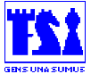

Inicio / Noticias
CONVOCATORIA AL CAMPEONATO PROVINCIAL DE AJEDREZ
CATEGORIA INFANTIL
Objetivo del Torneo: Seleccionar los mejores jugadores de las Provincia de Panamá que participarán en el próximo Campeonato Nacional de Ajedrez en la categoría Infantil por subcategorías
1. Derecho de participación
Pueden participar todos los jugadores y jugadoras que así lo soliciten de la Provincia de Panamá, nacidos desde el año 2001 en adelante.
2. Lugar y fecha
Se realizará en el local de la Federación ubicada en la Ciudad deportiva Irving Saladino los días 18 y 19 de octubre de 2014
3. Tipo de Torneo
Abierto, sistema suizo a 6 rondas.
Control de tiempo: 30 minutos para cada jugador; tiempo de espera: 30 minutos.
4. Inscripción
Las inscripciones tendrán un costo de USD$3.00 (tres dólares solamente). El dinero se utilizará para pago de arbitraje, papelería y baterías.
5. Calendario de juego
1ra ronda sábado 18 de octubre 9:00 am.
2da ronda sábado 18 de octubre 12:30pm
3ra ronda sábado 18 de octubre 3:00pm
4ta ronda domingo 19 de octubre 9:00am.
5ta ronda domingo 19 de octubre 12:30pm.
6ta ronda domingo 19 de octubre 3:00pm.
6. Desempates
a) Suma de la puntuación progresiva
b) Mayor Buchholz
c) Buchholz medio
7. Clasificación
Clasificarán los dos mejores jugadores de las categorías Sub 14, Sub 12, Sub 10 Sub 8 al Campeonato Nacional Infantil por categorías. La premiación será la clasificación al Campeonato Nacional.
8. Comisión Técnica
Profesor Juan Rivera.
9. Reglamento
Se utilizarán las Leyes de la FIDE vigentes.
Torneo de Ajedrez Bocas del Toro 2014
1. Derecho de participación
Pueden participar todos los jugadores y jugadoras que así lo soliciten.
2. Lugar y fecha
Se realizará en el edificio de la Cruz Blanca, sede del Club el Alfil, Avenida 17 de Abril, Finca 12, Changuinola, los días 11, 12,13, 14, 15 de Junio. El sorteo se realizara el día 11 de Junio a las 6 pm en el edificio de la Cruz Blanca, Finca 12. Sólo se podrá cambiar la sede del torneo con la autorización del Director del Torneo.
3. Tipo de Torneo
Abierto, sistema suizo a 7 rondas. Válido para Elo NACIONAL.
Control de tiempo: 90 minutos para cada jugador; tiempo de espera: 30 minutos.
4. Inscripción
Las inscripciones tendrán un costo de USD$10.00 (diez dólares solamente) para mayores de edad y USD$ 5.00 (cinco dólares solamente) para menores de edad. Las mismas serán recibidas por la Liga de Ajedrez de Bocas del Toro en la sede del Club el Alfil. (Celular: 68789289/ 66968442).
5. Calendario de juego
1ra ronda miércoles 11 de junio a las 19:00 horas.
2da ronda jueves 12 de junio a las 19:00 horas.
3ra ronda viernes 13 de junio a las 19:00 horas.
4ta ronda sábado 14 de junio a las 15:00 horas.
5ta ronda sábado 14 de junio a las 19:00 horas.
6ta ronda domingo 15 de junio a las 10:00 horas.
7ma ronda domingo 15 de junio a las 14:00 horas.
6. Desempates
Para los jugadores que soliciten un BYE debe quedar claro que por defecto quedarán al final de la tabla de posiciones a ese nivel y este criterio, para su desventaja, tendrá prioridad antes de aplicarse cualquiera de los siguientes criterios de desempate con otros jugadores de igual puntaje, independientemente de su resultado frente a ellos. Luego para desempatar se aplicarán los tres primeros criterios de desempate que aparecen a continuación, después de terminada la última ronda:
a) Suma de la puntuación progresiva
b) Mayor Buchholz
c) Mayor número de victorias
7. Premiación
Será distribuida de la siguiente manera:
1er lugar: 30% del monto recaudado en inscripciones y patrocinadores
2do lugar: 20% del monto recaudado en inscripciones y patrocinadores
3er lugar: 10% del monto recaudado en inscripciones y patrocinadores
Ajedrecistas menores de 17 años masculino y femenino que finalice en la posición más alta recibirán un premio de USD$ 30.00, si a la fecha del torneo se ha logrado recaudar más dinero en patrocinadores el premio aumentaría.
8. Comisión Técnica
Profesora Esther de Méndez.
9. Reglamento
Se utilizarán las Leyes de la FIDE.
6to Torneo del Grand Prix
1. Derecho de participación
- Jugadores con bandera panameña.
- Será requisito obligatorio tener membresía activa con la Federación de Ajedrez de Panamá (FAP), no habrá excepciones.
2. Lugar y fecha
Se realizará en el Local de la Federación de Ajedrez de Panamá (PanDeportes Juan Díaz), los días 26, 27, 28, 29 y 30 de Marzo. El sorteo se realizara el día 25 de Marzo a las 8 pm en el Van der’s Chess Club. Sólo se podrá cambiar la sede del torneo con la autorización del Director del Torneo.
3. Tipo de Torneo
Abierto, sistema suizo a 7 rondas. Válido para Elo FIDE.
Control de tiempo: 90 minutos para cada jugador +30 segundos de incremento desde la primera jugada; tiempo de espera: 30 minutos.
4. Inscripción
Las inscripciones tendrán un costo de USD$25.00 (veinticinco dólares solamente). Las mismas serán recibidas por la Federación de Ajedrez de Panamá en Van der’s Chess Club (Tel. 265-2921).
Adicionalmente la organización impondrá una multa de USD$20.00 a los jugadores que se han retirado de torneos anteriores sin excusa válida.
5. Calendario de juego
1ra ronda miércoles 26 de marzo a las 19:00 horas.
2da ronda jueves 27 de marzo a las 19:00 horas.
3ra ronda viernes 28 de marzo a las 19:00 horas.
4ta ronda sábado 29 de marzo a las 14:00 horas.
5ta ronda sábado 29 de marzo a las 19:00 horas.
6ta ronda domingo 30 de marzo a las 10:00 horas.
7ma ronda domingo 30 de marzo a las 15:00 horas.
6. Desempates
Para los jugadores que soliciten un BYE debe quedar claro que por defecto quedarán al final de la tabla de posiciones a ese nivel y este criterio, para su desventaja, tendrá prioridad antes de aplicarse cualquiera de los siguientes criterios de desempate con otros jugadores de igual puntaje, independientemente de su resultado frente a ellos. Luego para desempatar se aplicarán los tres primeros criterios de desempate que aparecen a continuación, después de terminada la última ronda:
a) Suma de la puntuación progresiva
b) Mayor Buchholz
c) Mayor Sonneborn-Berger
7. Premiación
Será distribuida de la siguiente manera:
1er lugar: 30% del monto recaudado en inscripciones + USD$75.00
2do lugar: 20% del monto recaudado en inscripciones + USD$50.00
3er lugar: 10% del monto recaudado en inscripciones + USD$25.00
Ajedrecista inscrito con Clase A o Categoría Inferior que finalice en la posición más alta: USD$50.00
8. Comisión Técnica
AF José Carrillo Pujol
9. Reglamento
Se utilizarán las Leyes de la FIDE.
|
VIII PANAMERICANO ESCOLAR 2014. |
|

El Salvador, 19 -26 de Mayo del 2014. Invitación. La Confederación de Ajedrez para América (CCA) y La Federación Salvadoreña de Ajedrez tiene el agrado de dar la bienvenida a todas las Federaciones Nacionales pertenecientes al Continente Americano; El evento se efectuará en la bella ciudad de San Salvador, El Salvador entre el 19-26 de mayo del 2014. Condiciones Generales § El Torneo se jugará de acuerdo a las Leyes y Reglamentos de la FIDE y los Regulaciones para el Campeonato Panamericano Escolar establecidos por la CCA. § El Sistema de Competencia será suizo a nueve(9) rondas. § El tiempo de reflexión es 90 minutos por jugador con un incremento de 30 segundos por jugada realizada a partir desde la primera movida con reloj Digital y de 2 horas para toda la partida en los relojes mecánicos. § Cada federación puede participar con cualquier número de participantes que posean el aval de su federación.
§ Las Categorías participantes ( Absoluto y Femenino) son: § Sub-7 : Nacidos en el 2007. § Sub-9 : Nacidos en el 2005. § Sub-11 : Nacidos en el 2003. § Sub-13 : Nacidos en el 2001. § Sub-15 : Nacidos en el 1999. § Sub-17 : Nacidos en el 1997.
Costos de Participación. § La federación organizadora cubrirá los costos de alojamiento y alimentación de los campeones de la edición 2013. Ademas a las delegaciones con mas de ocho jugadores el comité organizador cubrirá el alojamiento y alimentación de un delegado. § Antes del comienzo de evento cada participante deberá pagar la cuota de inscripción de la CCA, USD 40 por cada participante. § Además cada participante deberá cancelar USD $50 en concepto de Transporte Interno y del aeropuerto-hotel y viceversa. § El costo de la transportación aérea corre a cargo de cada federación.
§ Los costos de alojamiento y alimentación de los participantes, entrenadores, delegados y acompañantes son los siguientes: Habitación Doble $ 350 USD. En Hotel Polideportivo de Merliot. § La fecha límite de inscripción se cierra el día 15 de Mayo del 2014. Calendario Declaración de Ganadores
Títulos y Premios § El ganador de cada categoría del VIII Panamericano Escolar 2014 recibirá el titulo de Campeón y el derecho a alimentación y hospedaje en el Panamericano Escolar 2015 y al Mundial Escolar 2015. Títulos a Otorgar: § U13, U15 y U17 ( oro WFM/MF, Plata y Bronce WCM/CM) § U7, U9, U11 ( oro, plata y bronce WCM/CM)
§ Los organizadores otorgarán trofeo a los ocupantes de los primeros tres lugares y medalla a los 4y5to lugar en cada categoría. § Trofeo a los países que ocupen los primeros tres lugares de acuerdo a los resultados: 25 pts al 1er, 20pts al 2do, 18 pts al 3er, 16 pts al 4to, 15 pts al 5to, 14 pts al 6to, 13 pts al 7mo y 12 pts al 8vo. lugar la suma mayor gana.
Federación Salvadoreña de Ajedrez Phone-Fax: 2556-1018 E-mail:
Esta dirección de correo electrónico está siendo protegida contra los robots de spam. Necesita tener JavaScript habilitado para poder verlo.
|
5to Torneo del Grand Prix
1. Derecho de participación
- Jugadores con bandera panameña.
- Será requisito obligatorio tener membresía activa con la Federación de Ajedrez de Panamá (FAP), no habrá excepciones.
2. Lugar y fecha
Se realizará en el Local de la Federación de Ajedrez de Panamá (PanDeportes Juan Díaz), los días 12, 13, 14, 15 y 16 de Marzo. El sorteo se realizara el día 11 de Marzo a las 8 pm en el Van der’s Chess Club. Sólo se podrá cambiar la sede del torneo con la autorización del Director del Torneo.
3. Tipo de Torneo
Abierto, sistema suizo a 7 rondas. Válido para Elo FIDE.
Control de tiempo: 90 minutos para cada jugador +30 segundos de incremento desde la primera jugada; tiempo de espera: 30 minutos.
4. Inscripción
Las inscripciones tendrán un costo de USD$25.00 (veinticinco dólares solamente). Las mismas serán recibidas por la Federación de Ajedrez de Panamá en Van der’s Chess Club (Tel. 265-2921).
Adicionalmente la organización impondrá una multa de USD$20.00 a los jugadores que se han retirado de torneos anteriores sin excusa válida.
5. Calendario de juego
1ra ronda miércoles 12 de marzo a las 19:00 horas.
2da ronda jueves 13 de marzo a las 19:00 horas.
3ra ronda viernes 14 de marzo a las 19:00 horas.
4ta ronda sábado 15 de marzo a las 14:00 horas.
5ta ronda sábado 15 de marzo a las 19:00 horas.
6ta ronda domingo 16 de marzo a las 10:00 horas.
7ma ronda domingo 16 de marzo a las 15:00 horas.
6. Desempates
Para los jugadores que soliciten un BYE debe quedar claro que por defecto quedarán al final de la tabla de posiciones a ese nivel y este criterio, para su desventaja, tendrá prioridad antes de aplicarse cualquiera de los siguientes criterios de desempate con otros jugadores de igual puntaje, independientemente de su resultado frente a ellos. Luego para desempatar se aplicarán los tres primeros criterios de desempate que aparecen a continuación, después de terminada la última ronda:
a) Suma de la puntuación progresiva
b) Mayor Buchholz
c) Mayor Sonneborn-Berger
7. Premiación
60% del monto recaudado en inscripciones, el cual será distribuido de la siguiente manera:
1er lugar: 30%
2do lugar: 20%
3er lugar: 10%
8. Comisión Técnica
AF José Carrillo Pujol
9. Reglamento
Se utilizaran las leyes de la FIDE.